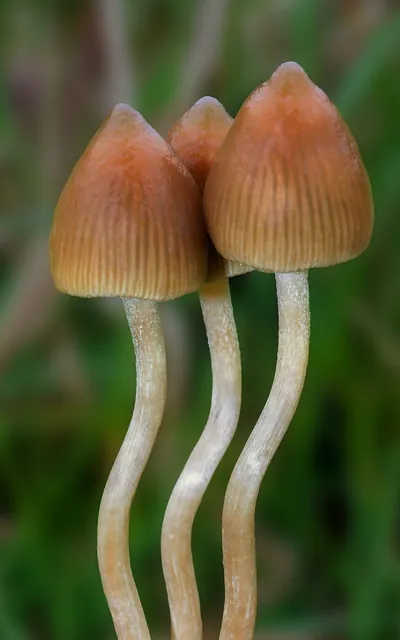
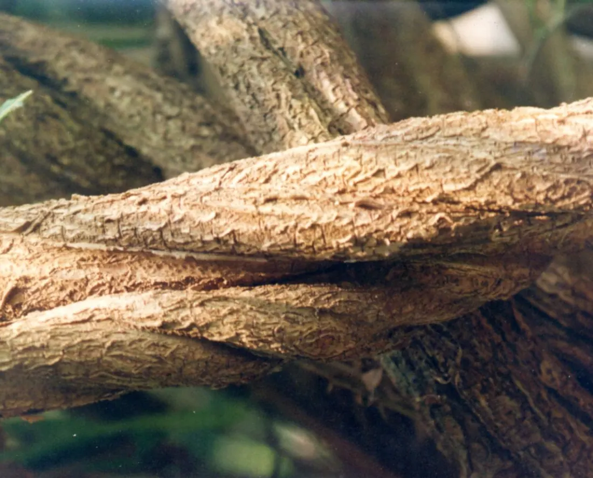
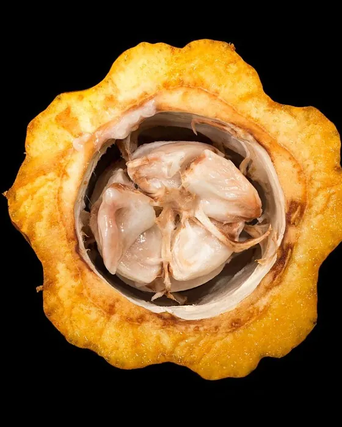

Association for Psychedelic Divulgation, Education and Research
Plantas, moléculas y conciencia, explicadas con cuidado
Somos una asociación sin ánimo de lucro. Explicamos qué son las medicinas psicodélicas, cómo actúan y cómo cuidarse, con información clara y contrastada.
Por ejemplo Setas de psilocibinaMDMAAyahuascaMicrodosis

Plantas
Enciclopedia de medicinas
Plantas, hongos, animales y preparados que distintos pueblos llaman medicina. Cada ficha cuenta cómo es, dónde vive, quién guarda su memoria y qué se ha estudiado.

PreparadoAyahuasca
Banisteriopsis caapi
La «soga de los espíritus»: una liana y la bebida que decenas de pueblos amazónicos cuecen con ella.
 Hongo
HongoMatamoscas
Amanita muscaria
La seta roja de los cuentos. Tóxica, sedante y sin psilocibina.

PlantaCacao
Theobroma cacao
Bebida ritual de Mesoamérica antes que alimento.
Moléculas
Guías de medicinas
Qué es cada una, cómo actúa, cuánto dura, con qué no conviene mezclarla y cómo reducir riesgos. Todas siguen la misma estructura, para poder compararlas.
También: Medicinas por familias y Microdosis
Psicodélicos clásicos
Plantas y hongos
Conciencia
La experiencia, con cuidado
Lo que pasa antes, durante y después cuenta tanto como la sustancia. Cuatro ideas para empezar.
Reducción de riesgos
Informarse es cuidarse
No animamos a nadie a consumir. Creemos que informarse cuida, y que muchos problemas nacen de la desinformación y del miedo.
Cómo reducir riesgosSet y setting
Cómo llegas y dónde estás pesan tanto como la sustancia.
Analiza
Un servicio de análisis te dice qué hay de verdad y en qué cantidad.
Mezclas
El litio, algunos antidepresivos o los IMAO pueden dar problemas al combinarse. Revisa antes las interacciones.
Compañía
Tener cerca a alguien sobrio y de confianza hace todo más seguro.
También Experiencias difícilesUnidad e interconexiónMicrodosisTodo Psiconáutica
Terapia e investigación
Qué se sabe del uso terapéutico de estas medicinas y qué falta todavía por saber. APDER no ofrece sesiones ni terapias.
Guías de terapia
Cómo se plantea el trabajo terapéutico con cada medicina: preparación, sesión e integración.
Marco común, MDMA, psilocibina, LSD, ketamina, ayahuasca, ibogaína, mescalina y 5-MeO-DMT.
Investigación terapéutica
Qué se ha estudiado, para qué problemas de salud y cómo participar en un ensayo clínico con garantías.
Depresión, estrés postraumático, adicciones, final de la vida y otras líneas.
Dónde formarse
Directorio independiente de formaciones en terapia asistida, acompañamiento, integración e investigación.
En línea y presenciales, con mapa, filtros y buscador.
Biblioteca
Más de 800 libros para leer a fondo
De la etnobotánica a la clínica, en seis idiomas, con buscador y filtros por tema, sustancia e idioma.


Entrar por En españolTerapia y clínicaAntropología y chamanismoMemorias y testimonios
Ir a la BibliotecaQuién es quién
Las personas que abrieron el camino
- María SabinaSabia mazateca de Huautla. Curaba con los niños santos.
- Albert HofmannQuímico suizo. Descubrió el LSD y aisló la psilocibina.
- Stanislav GrofPsiquiatra checo. Cofundador de la psicología transpersonal.
- Richard Evans SchultesBotánico de Harvard. Recopiló miles de plantas en la Amazonía.
«Una humanidad más consciente, una humanidad libre, más humana: eso es lo que necesitamos.»
Quiénes somos
Tres raíces, un mismo árbol
Trabajamos para que cualquier persona pueda llegar a buena información sobre estas medicinas.
Divulgation
Divulgación
Guías y artículos en español para entender qué hace cada medicina, qué riesgos tiene y con qué no conviene mezclarla. Sin alarmismo y sin idealizarlas.
Leer las guíasEducation
Educación
Reunimos lecturas y materiales para aprender con rigor: una biblioteca de más de 800 libros y guías ordenadas para quien quiere profundizar.
Ir a la BibliotecaResearch
Investigación
De cientos de plantas y compuestos apenas se sabe nada. Seguimos lo que se investiga sobre su posible uso terapéutico y lo contamos con claridad.
Ver la investigaciónHablemos
Si tienes una duda sobre una guía, ves un error o te gustaría colaborar, escríbenos.